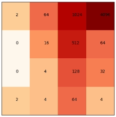

Recoding the game in Python
The first step of the process was to recode the game in python so my algorithm could play it.
It was pretty staright forward as all the rules of the game are pretty well documented and could be found online (including the probability of spawning 2s or 4s).
I took the time to make a simple interface to play the game and display results. In this version the player enter a letter for a move: "z"=up, "d"=right, "q"= left and "s"=down (french keybord traditionnal setup).
From there I could even play the game on this program as sown in the short gif on the left side. However, there was no animation so the movment of the tiles is not that easy to comprehend if you are not the one playing.
But for the purpose of the experiment this will do.
The first thing I ried was to implement some Convulutionnal Neural Network (CNN) because I though it was a good place for it.
I experiment with different set up of multiple layers of CNN with different loss function. The training was a bit hard to set up as I mylsef play few games to give the NN something to start from.
These experiements mostly failed to my standard, as I could only reach a 1024 maximum tile in what mostly felt like luck and brute force try and retry.
My second experiement was to shift torward reninforced machine learning. However, to be honest, I could not quite figure the right reward function to make it work in the few hours I spend on it.
Again, the results were pretty poor and it barely broke the 512 maximum tile.
That is when it hit me: Why do everybody wants to do Neural Networks and Machine Learning when perfetly good analyticle solution exists?
After all the strategy I am using when I am playing resolve only little on improvisation and adaptation and could be simply coded.
And here I am not trying to impress my superiors or ill advised clients by selling some up and trending feature, so let's go back to being smart.

When one play "2048", on would quickly realise that it is way easier to substain a run if your maximum tile is set up in a corner.
Then a good strategy is to set up your tiles following a snake pattern starting from this maximum tile in per descending order (see illustration on the left).
This way you can optimise your space and and give you a better chance to reach a high score.
The purpose of this set up is to make sure that each tile is next to its two time tile.
This way you will be able to trigger a domino effect when you get all the tiles necessary to increase you maximum tile.
The maximum tile then needs to be in the corner for two reasons. First it does not have a two time tile so it only need to be in contact with its divided by two tile, any extra conctat with tile is useless and suboptimal.
Secondly, sticking it in a corner (let's say lower right for example) allows you to keep it there by a combination of right and down moves; the left and up move should not be used (that is usually when game breaking mistakes happen) unless in some very specific cases.
This is the strategy that I used in my personal runs. Usually getting your maximum tile out of the corner is pretty much game over past a certain point (a 1024 maximum tile from experience).
Breaking the snake pattern will also make is incredably difficult in the late game.
Implementing The Strategy
There is two way to go about it: you can either code most of the scenario case by case; or just find a way to make the algorithm evaluate what is the best move depending on the situation by a simple move rating function.
I am lazy so I picked the second one obviously. I will not detail the whole fomula here, but I will touch on what it is trying to achieved. There is few principles that we want to implement:
One of them is that we want our maximum tile in a corner.
To enforce that we can simply give extra bonus points in case it is true and game breacking malus if it is false.
Then, we would like the algorithm to stack tiles as much as possible (i.e. saving the most space is can), for this can just look for optimise the mean of number per occupied tile (0 in a tile means it is not occupied).
Next, we would want to implement some sort of snake pattern. I started by simply asking that the second largest tile would be next to the maximum tile with a bonus and game breaking malus system depending on the situation.
The degree to which you want the snake pattern to be true is an optimisation question that we could improve later on.
And finally, if the move is a losing end of the game move we obviously don't want that so let's put the reward at minus infinity.
And that is pretty much it for the strategy. Pretty simple right? At each turn this startegy will evaluate the outcome of each 4 possible move and rate them according to our rules.
Now let test it and see if we can optimise it a bit.
Preminilary Results and Optimisation
This startegy reach 2048 in about 10% of the runs, which is already pretty good. However that is not enought I would like to beat my own record and to be pretty dominant doing so.
So what can we improve? The first thing to consider is that after each move, a random tile of 2 or 4 is added. And this is randomso by simulating only one time the move we are not getting the full picture!
One random generation might be acceptable, another one might break the game and lead to a loss.
So from now on let's simulate like 20 of them to be safe. Why 20?
Because there is 16 tiles in the game; at in the middle game and late game you will have at least half of your tiles occupied so 20 means that you will most likely generate enought times your moves to have all situations possible.
We could have gone deterministic about it and figure out all possible outcomes for each move but, firstly be lazy, and secondly trust the maths will do you job because we are not trying to go for a world record here.
Then the purpose of the game is NOT to get a maximum tile higher! It is to keep playing!
Meaning that making a particuliar move might give you short term high score but might end you game short after that. We rather limit the risk of losing and keep player as long as we can.
So when we generate 20 times each move we don't want to go for the move with the highest mean score. We want to go for the move which will keep us playing the game.
This can be translated into the move from which the mean is closer to the maximum while having a large maximum reward.
This way we avoid this move that work perfectly 95% of the time but lead to a strait loss the rest 5% of the time.
I will refer to this as the "keep playing" feature.
Finally, we looked at the next move, but what prevent us for looking at the next one as well and so on?
This way we would rate a move not only on its immediat reward but also on the next possibility it offers.
We would also anticipate bad situation that can arise over several turn and be able to pick the safest path.
I implemented all these solution over several steps, lets look at the results.
For the first try, I look at every move 20 times and anticipated only one move (no "keep playing" feature): it reaches 2048 19% of runs.
For the second try, I look at every move 20 times and anticipated 2 moves (no "keep playing" feature): it reaches 2048 29% of the runs.
For the third try, I look at every move 20 times and anticipated 2 moves with a "keep playing" feature: it reaches 2048 60% of the runs. Howeverit never reached 4096.
Lastly, I looked a every move 4 times (to limit computation time, plus the end game seems to be the problem here and tere is not that much tiles left), anticipated 3 moves with a "keep playing" feature: it reaches 2048 over 95% of the runs.
It also reached 4096 in only 6 tries with a score of 6068, outscoring my personnal by 454 pts (in freaking 6 tries!!).

So here is it, I bested my personnal best with some simple algorithm and a basic approch.
Now this can be optimised for sure.
The first thing that would easily crush this algorithm would be to implement the snake patter all the way.
Here you can see on the video that the algorithmis actually doing a quite poor job at optimizing its space.
However, a funny part is that the algorithm figured out on its own that you need to have a decreasing value pattern (i.e. each tiles needs to be next to its x2 and /2 tiles).
This is something that I did not implemented in the code and might just be a logical consequences of the rules I implemented.
In particular, it probably comes from, the "keep playing" feature and the look few moves ahead feature to maximize chances of high reward.
Thus, I have no doubt that this high score could be easily beaten again if I spend a bit more time on this project.
However, I started this project to prove that I could beat my own record, not going for the highest score ever, and I achieved it in little time with minimal effort so I would say it's a sucess.
Reflecting, on it I pretty satisfied of this project for multiple reasons. First, it was a sucess so I will take that.
Then, it shows that you do not have to go for fancy shiny technics such as machine learnig and CNN to solve problems.
Analytical or semi-analytical solutions will do the job in 99% of projects and be easier to implements.
During the 18h or so of this project I migh have spend 30% coding the game and interface, 50% trying some advance machine learnig approched and 20% rolling through the project with basic approches.
And the worst part is that, this simple basic approch is way way easier to improve: we can clearly identify how to improve the code by simply looking at the results and changing the reward function.
Which lead to my final point: this project is particulary statisfying to me because I only scratched the surface of its potential.
The approch that beat my personal best has so many flaws I cannot even imagine what would be the highestscore it could reache once optimized.